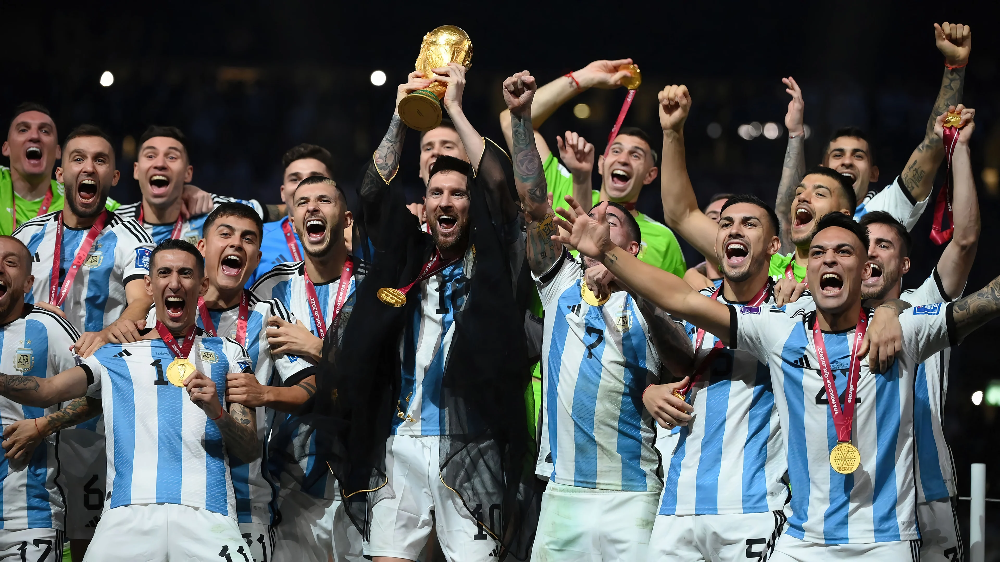

La Copa Mundial de la FIFA es el torneo de selecciones nacionales más importante del fútbol, organizado cada cuatro años desde 1930 (salvo en 1942 y 1946 por la Segunda Guerra Mundial). Participan selecciones de todo el mundo, clasificadas a través de eliminatorias continentales. Es el evento deportivo más visto del planeta y ha sido escenario de momentos históricos, leyendas como Pelé, Maradona y Messi, y consagraciones que marcaron generaciones.

Selecciones más campeonas en la historia del Mundial
Brasil 5 títulos (1958, 1962, 1970, 1994, 2002)
Alemania 4 títulos (1954, 1974, 1990 por Alemania Occidental, 2014 como Alemania unificada)
Italia 4 títulos (1934, 1938, 1982, 2006)
Argentina 3 títulos (1978, 1986, 2022)
Francia 2 títulos (1998, 2018)
Uruguay 2 títulos (1930, 1950)
España 1 título (2010)
Inglaterra 1 título (1966)
🎯 Máximos goleadores históricos de los Mundiales
Miroslav Klose (Alemania) – 16 goles
Ronaldo Nazário (Brasil) – 15 goles
Gerd Müller (Alemania Occidental) – 14 goles
Just Fontaine (Francia) – 13 goles (todos en un solo Mundial: 1958)
Lionel Messi (Argentina) – 13 goles (última actualización: Mundial 2022)